Este post es un poco meta (al hablar en el blog sobre algo del mismo blog), pero lo escribí porque al buscar tutoriales sobre cómo implementar mi propio newsletter encontré muy poco materia: tuve que averiguar cómo hacerlo mediante prueba y error, y adaptando instrucciones no pensadas para hugo/blogdown.
Me gustaría que quienes están buscando lograr lo mismo tengan las cosas más fáciles, y para ello explico aquí, paso a paso, 3 formas distintas de implementar un newsletter en un sitio blogdown.
Estas 3 formas de implementar un newsletter difieren en nivel de dificultad, y en qué tanta automatización y personalización permiten en el resultado final.
Debido a que es un tutorial paso a paso, el artículo es bastante largo. Mi recomendación es NO leerlo completo, sino que decidir primero cuál de los 3 métodos se ajusta más a lo que buscas, y luego ir directo a la sección donde se explica ese método.
Estos 3 métodos son:
Abajo pueden un ver un cuadro resumen con las ventajas y desventajas de estos 3 métodos.
Los 3 métodos ofrecen formularios de suscripción para que los lectores se den de alta en el newsletter, así que no hay mucha diferencia entre ellos en este plano.
Además, notar que el método 1, el más simple, sí permite tener segmentación de suscriptores (algo que el método 2 no tiene). La trampa aquí es que se trata de una segmentación manual, en el sentido de que tendremos que escribir a mano los correos personalizados para cada segmento (no se enviarán automáticamente a medida que publiquemos contenido en el blog).
Finalmente (antes de partir con los tutoriales en sí) añadir un par de consideraciones:
En blogdown existen muchos casos particulares debido a que los distintos temas de hugo tienen diferentes caracter√≠sticas/funcionalidades, y puede que en algunos temas los pasos mostrados acá requieran de cierta adaptaci√≥n. Pero en la mayor√≠a de los casos todo deber√≠a funcionar de forma muy parecida (ü§ûüèº).
El post no se llama “Todas las formas de agregar un newsletter…”. Si buscan en la web probablemente encontrarán muchos otros servicios de newsletter que también podrían integrarse con blogdown con algo de esfuerzo, y quizás algunos de ellos sean más sencillos o más potentes que los mostrados acá. Mi intención no es hacer una revisión exhaustiva de todos los métodos existentes para hacer un newsletter (eso sería un e-book, no un blogpost) sino que simplemente compartir con la comunidad los 3 métodos que encontré yo, con la idea de facilitar las cosas a quienes deseen hacer algo parecido.
El artículo no asume conocimiento previo sobre Buttondown o MailChimp, pero sí asume que tienes un buen manejo de blogdown, es decir, que sabes como crear y personalizar un sitio web mediante ese paquete. Si ese no es tu caso, puedes encontrar una muy buena introducción al tema en el libro blogdown: Creating Websites with R Markdown.
Es un artículo “opinionado”. Cuando me propuse implementar un newsletter tenía una idea muy clara de lo que quería lograr, y por ende los métodos que encontré y que estoy compartiendo ahora están “sesgados” en esa dirección.
Y ya sin más que agregar, paso a mostrarles los tutoriales de cada uno de los métodos.
Si tienes un sitio en blogdown a modo de side-project y publicas ahí sólo ocasionalmente (una vez al mes o menos), tal vez no sea tan necesario tener un newsletter automatizado y puedes darte el lujo de anunciar tus nuevos posts de forma manual: escribiendo a mano correos invitando a leer cada nuevo artículo y enviándolos a una lista de distribución de personas suscritas.
Si un newsletter de este tipo te suena bien, entonces quizás Buttondown, un servicio sencillo y fácil de configurar, sea la opción correcta para ti.
A continuación explico el paso a paso de como usarlo:
Puedes crearte una cuenta de Buttondown desde aquí. Luego de hacerlo serás redirigido de inmediato a una página donde configurar el newsletter, indicando el título, descripción, y otras opciones (por ejemplo, si tener un archivo o un feed RSS para los correos enviados previadamente)1.

Así es la página de configuración del newsletter en Buttondown. Esta aparecerá justo después de crear tu cuenta.
Finalmente, en esta página es posible importar suscriptores en formato CSV, algo útil si estás migrando un newsletter desde otra plataforma, o si ya tienes una lista de personas que desean suscribirse.
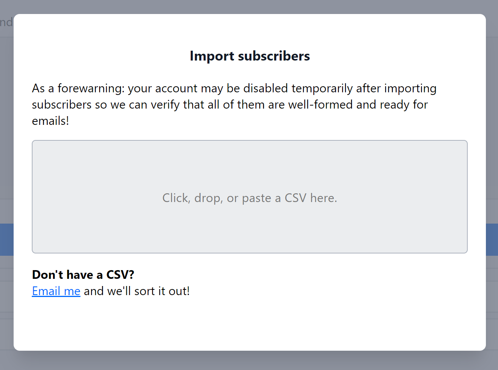
Una vez creada la cuenta y configurado el newsletter es necesario habilitar un mecanismo para que las personas se suscriban. En Buttondown esto se puede hacer en la sección “Embedding & sharing” del Menú principal.
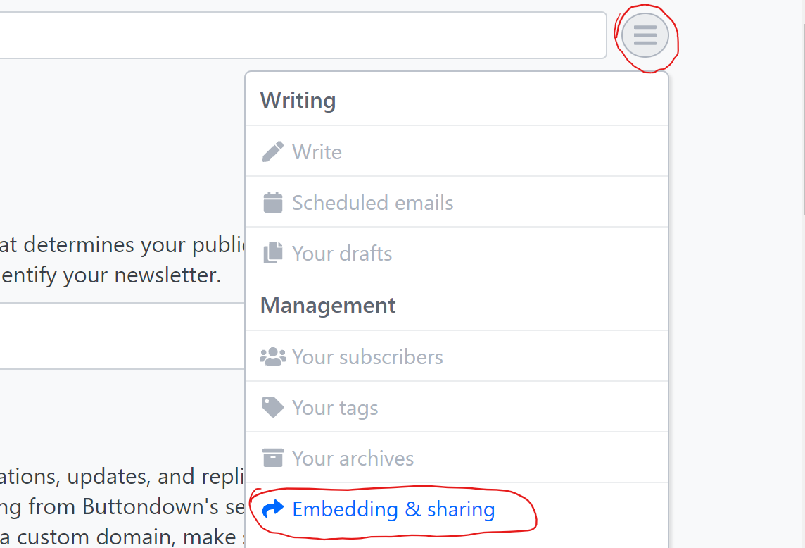
Desde aquí puedes elegir entre varios tipos de formularios de suscripción:
Formulario en Buttondown.email, con una URL única que puedes compartir o linkear desde tu blog (aquí un ejemplo). Esta es la opción más fácil: solo hay que tomar la URL y crear un link desde algún lugar visible en tu blog (por ej., la barra de navegación).
Formularios HTML/iFrame que puedes incrustar dentro de tu propio blog, así no es necesario que lectores vayan hacia una URL externa para suscribirse. Si vas por esta opción, recomendaría escoger el formulario HTML (sección “Share as a form” dentro de Buttondown) y no el iFrame. Para implementarlo hay que copiar el código que sale ahí, y pegarlo en un archivo .md dentro de la carpeta con las páginas de tu blog (usualmente es la carpeta ~/content).

Luego hay que hacer que la página con el formulario sea accesible desde la navegación del blog, linkeandola desde la barra de navegación o algún otro lugar visible.
Aquí recomendaría nombrar subscribe.md o suscribirse.md a la página con el formulario. Así dicha página será accesible desde una URL como baseURL/subscribe (donde baseURL es la URL que nos lleva a la página de inicio del blog), la cual es fácil de compartir o agregar a la barra navegación.
Un detalle importante respecto a los formularios HTML es que a veces no cargan, debido a una restricción del motor de renderizado de hugo. Si te encuentras con este problema, puedes solucionarlo agregando esta porción de código al final del archivo config.toml de tu sitio blogdown.
[markup]
[markup.goldmark]
[markup.goldmark.renderer]
unsafe = trueTeniendo ya el newsletter configurado y una lista de suscriptores cargada, puedes empezar de inmediato a enviar boletines con los nuevos posts de tu blog. Para esto hay que ir al Menú -> opción “Write” (o directamente a buttondown.email/emails) y escribir y enviar el boletín desde ahí. Incluso es posible programar el envío para un momento posterior.
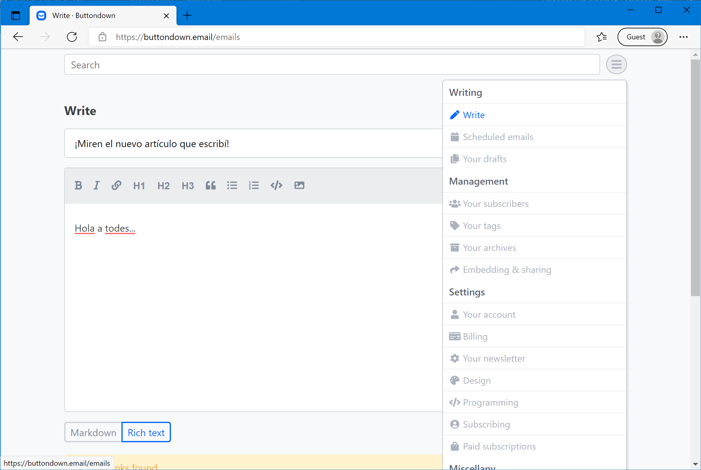
Ahora veremos cómo implementar en MailChimp un newsletter que notifique automáticamente a tus suscriptores cada vez que publiques un nuevo blogpost, sin necesidad de escribir correos manualmente.
Debido a que MailChimp es más complejo de usar que Buttondown, intentaré mantener esta sección fácil de seguir enfocándome primero en el caso más básico: una única lista de distribución con todos los artículos del blog. Posteriormente (en el método 3) cubriré el caso de listas de distribución segmentadas (análogas a los tags de Buttondown) para enviar artículos de distintos idiomas o temas según las preferencias de tu audiencia.
Otra consideración con MailChimp es que el contenido del newsletter estará determinado por el feed RSS de tu blog. Si tu blog dispone de feeds RSS con contenido completo, entonces los suscriptores recibirán los posts completos en cada correo. Si no, los correos mostrarán solo un fragmento con el comienzo de cada artículo, y los suscriptores tendrán que ir al blog para leer el resto2.
Al igual que con Buttondown, el primer paso para usar MailChimp es crear una cuenta. Sin embargo, aquí aparece una consideración adicional: a causa del carácter más “profesional” de este servicio se nos solicita registrar una dirección física, debido a leyes anti-spam internacionales que obligan a dar tal información a quienes envíen correos masivos.
Esta dirección luego aparecerá por defecto al pie de los correos enviados y en algunos formularios del flujo de suscripción (por ejemplo, cuando un suscriptor cambia sus preferencias). Es posible ocultarla en algunos lugares, pero no en todos, por lo que siempre habrá páginas públicas que muestren la dirección registrada.
¿Qué hacer aquí? Es natural que nos cause incomodidad publicar un dato así de sensible, pero si no ingresamos nada en ese campo, MailChimp simplemente no nos deja seguir.
Las recomendaciones oficiales de MailChimp para evitar dar la dirección de nuestro hogar son las siguientes:
Dar la dirección de una universidad, en caso de ser estudiantes o estar afiliados a una institución académica.
Dar la dirección de nuestro lugar de trabajo o de un espacio de cowork.
Contratar una casilla postal y usar esa dirección como información de contacto.
En general, cualquier dirección donde podamos recibir y recoger correo físico será una opción válida que cumplirá con la legislación anti-spam.
Además de la disyuntiva de la dirección física, al registrarnos en MailChimp también debemos escoger el plan a contratar (aquí el gratuito debería ser suficiente si la lista de suscripción es pequeña), y un “Nombre del negocio”, que debería ser el nombre de nuestro sitio web o blog.

Los planes que ofrece MailChimp. Si recién estamos empezando nuestro newsletter, el plan gratuito debería ser suficiente.
Finalmente (e igual que en Buttondown), se muestra una opción para importar direcciones de correo, útil si es que estamos migrando un newsletter existente. En caso contrario se puede omitir.
Y listo, con eso finaliza el registro y podemos avanzar al paso 2.
Para poder enviar los posts de forma automática a tus suscriptores es necesario contar con un feed RSS que se actualice cada vez que se publica un nuevo artículo.
La mayoría de los templates de hugo usados para blogdown entregan soporte nativo para RSS, disponibilizando un feed con los blogposts en una URL de este tipo:
baseURL/post/index.xml
Donde baseURL corresponde a la URL que nos lleva a la página principal del blog, y post es el nombre de la carpeta que contiene los artículos en el repositorio del blog, y usualmente ubicada dentro de ~/content. Por ejemplo, en este blog la baseURL es franciscoyira.com/es y el feed con los posts es franciscoyira.com/es/post/index.xml.
En otros templates de blogdown esta carpeta puede tener otro nombre, pero el rasgo distintivo que permite identificarla es que dentro de ella se guardan los artículos del blog (archivos en formato .Rmd, .Rmarkdown o .md). A veces el nombre de esta carpeta está especificado en un archivo config.toml en el directorio raíz del repositorio3.
Feed RSS de mi blog previsualizado con The RSS Aggregator
Una vez obtenida la URL del feed RSS puede ser buena idea previsualizarla para así validar su contenido. Para ello se pueden usar opciones como estas:
RSS Viewer: una herramienta web en la cual se ingresa la URL del feed y se obtiene una vista HTML de este.
The RSS Aggregator: un lector RSS disponible como extensión para Chrome y Edge (Chromium). Al instalarlo podremos visualizar los feeds RSS directamente en el navegador.
Feedly: un lector RSS disponible como servicio web. Es muy completo y popular pero requiere crear una cuenta.
Ya con la URL del feed RSS en mano, procedemos a crear la automatización de MailChimp para enviar un correo cada vez que se publique un nuevo artículo.
Para ello hay que ir a esta página y hacer clic en el botón “Turn On RSS-to-Email”.

Luego aparecerá una vista como esta, donde se le debe asignar un nombre a la “campaña” (“Campaign Name”). Este nombre es interno y tiene como fin distinguir este envío recurrente de otros envíos (manuales o automatizados) que implementemos en el futuro.

Presionamos “Begin”, y en la siguiente página hay que ingresar la famosa URL del feed RSS obtenida en el paso anterior. Además, se puede configurar a qué hora se enviarán los correos automatizados4. Si todo está OK, hay que presionar “Next” en la esquina inferior derecha.
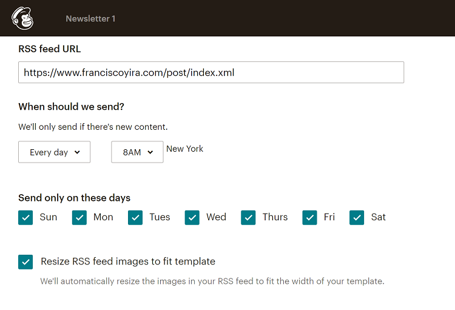
En la siguiente pantalla hay que seleccionar la audiencia a la que le llegará el newsletter. Aquí dejaremos el valor por defecto (“Entire audience”) ya que estamos creando un newsletter único (no segmentado) para todos los suscriptores5.
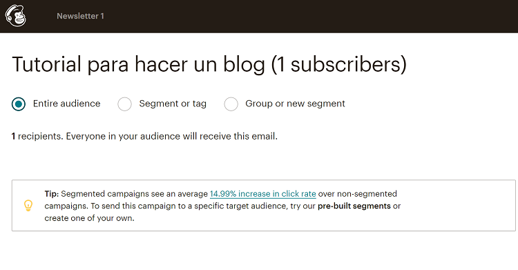
Luego de presionar “Next” aparecerá la sección de “Información de campaña”, donde se pueden personalizar otros parámetros del newsletter.

El primer campo (“Campaign name”) corresponde al mismo “nombre de campaña” que ingresamos en la primera parte del asistente, y que es solo de uso interno.
El segundo campo (“Email subject”) sí es relevante para los suscriptores: es el título o asunto de los correos que recibirán. Aquí es posible usar los llamados “merge tags” de MailChimp: variables que son reemplazadas por atributos provenientes desde el feed RSS, o del gestor de audiencias de MailChimp (por ej, el nombre o apellido de cada suscriptor, o la fecha de publicación del artículo). En mi caso, uso el tag *|RSSITEM:TITLE|* que corresponde al título de cada nuevo artículo.
El tercer campo (“Preview text”) corresponde al fragmento que aparece debajo del asunto en las apps de correo electrónico.
Así se ve el “Preview text” en las apps de correo electrónico. Fuente: benchmarkemail.com
No logré encontrar un merge tag útil para personalizar el preview text, así que opté por un mensaje estático: “Abre este correo para leer el artículo completo”, pensando en incrementar la tasa de apertura del newsletter.
Los últimos 2 campos de esta sección corresponden al remitente: el nombre (“From name”) y correo (“From email address”) que aparecerán en el “De:” o “From:” cuando los suscriptores reciban el newsletter. Aquí la idea es usar algo fácilmente reconocible para evitar que los suscriptores se confundan y piensen que es spam.
Más abajo en la misma página hay algunas opciones adicionales, pero que pueden dejarse con sus valores por defecto sin modificar.
A continuación presionamos Next y pasamos a la siguiente sección: escoger la plantilla para el newsletter. En esta sección mi recomendación es elegir “1 Column” o “Simple Text”, que tienen lo justo y necesario para que nuestros posts se muestren correctamente. Para este tutorial elegiré “Simple Text”.

Las plantilla básicas “1 Column” y “Simple Text” son buenas opciones para un Newsletter de blogposts.
Habiendo seleccionado la plantilla, aparecerá la vista de Diseño (“Design”) donde hay que hacer algunos cambios para que el newsletter funcione de manera adecuada.

Así luce la vista de Diseño del newsletter luego de haber escogido la plantilla “Simple Text”
En particular, debemos insertar una serie de merge tags RSS para que contenido del newsletter se alimente de los nuevos posts del blog.
Para mí, la forma más sencilla de hacer esto fue borrar todos los bloques que vienen con la plantilla, e insertar 3 nuevos bloques de texto (“Text” desde la galería de contenido de la derecha). Luego seleccioné y edité estos bloques, e inserté ahí los merge tags correspondientes.
A continuación describo cada uno de estos bloques (junto al código HTML para replicarlos):
Primero, un bloque de cabecera, muy simple, en un tamaño de letra pequeño y con un link directo al post en el blog. ¿Por qué? Debido a que a veces los clientes de correo no muestran correctamente el contenido de los newsletters y en estos casos queremos que el lector pueda ir fácilmente al artículo original usando un navegador web6.
El HTML para este bloque es el siguiente:
<span style="font-size:12px"><a href="*|RSSITEM:URL|*" target="_blank">Ver el post en tu navegador</a> (recomendado).</span>
Y debería verse así en el panel de la izquierda:
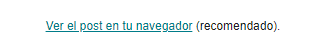
Nótese la presencia del merge tag *|RSSITEM:URL|* en el link. Este merge tag se reemplazará por la URL correspondiente al post en cada envío del newsletter.
Luego viene un bloque de contenido, cuyo código es el siguiente:
<h2 class="mc-toc-title"><span style="font-family:helvetica neue,helvetica,arial,verdana,sans-serif"><a href="*|RSSITEM:URL|*" target="_blank">*|RSSITEM:TITLE|*</a></span></h2>
<span style="font-family:helvetica neue,helvetica,arial,verdana,sans-serif">*|RSSITEM:CONTENT_FULL|*</span>
<pre>
<span style="font-family:helvetica neue,helvetica,arial,verdana,sans-serif">*|END:RSSITEMS|*</span>
</pre>Y debería verse así en el panel de la izquierda:

Y finalmente un bloque footer, con elementos obligatorios como la licencia del contenido y el link de desuscripción. El código que usé para este bloque es el siguiente:
<em>Este trabajo está licenciado bajo <a href="http://creativecommons.org/licenses/by/4.0/" rel="license">Creative Commons Attribution 4.0 International License</a>.</em><br />
<br />
*|LIST:DESCRIPTION|*<br />
<br />
¿Quieres cambiar como recibes estos e-mails?<br />
Puedes <a href="*|UPDATE_PROFILE|*">actualizar tus preferencias</a> o <a href="*|UNSUB|*">desuscribirte de esta lista</a>.<br />
<br />
*|REWARDS|*Y debería verse así en el panel de la izquierda:

Por supuesto, en este último bloque deberías modificar la parte de la licencia en caso de que quieras usar una distinta a CC 4.0.
Notar que MailChimp ofrece un editor visual para los bloques de texto, por lo que técnicamente no es necesario manipular HTML: los merge tags se pueden insertar “tal cual” en este editor visual, y su formato (fuente, tamaño) se puede modificar desde ahí. Pero yo prefiero compartirles los bloques de código porque así es más fácil seguir las instrucciones: solo basta copiar y pegar. Una vez copiados los bloques se puede cambiar sin problemas al editor visual para seguir personalizándolos.
Y listo, habiendo ya diseñado y personalizado el newsletter podemos echarle un vistazo a como lucirá en las bandejas de entrada de nuestros suscriptores ✨. Para esto existe el menú “Preview and Test” en la esquina superior derecha, dentro de la misma sección Design. Este menú permite previsualizar un correo de prueba en la web de MailChimp o en la aplicación móvil, e incluso enviarnos un correo de prueba a nosotros mismos (o a amigos dispuestos a ser conejillos de indias).
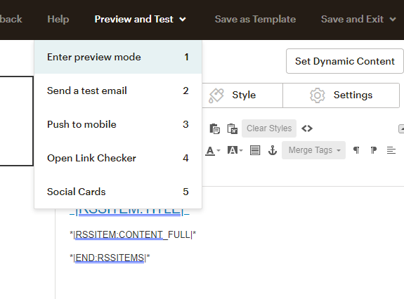
Una vez conformes con cómo se verá el newsletter presionamos “Next” y avanzamos al último paso de esta sección: Confirmar que todo esté OK y dar luz verde a los envíos automáticos.
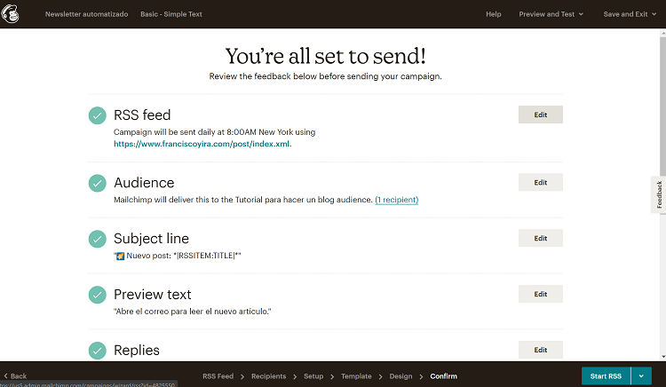
En esta página se puede dar un último vistazo a las opciones del envío, y volver atrás si es que aun queremos cambiar algo. Si todo nos parece bien, hay 2 opciones para que el newsletter empiece a operar:
Start RSS (botón abajo a la derecha): pone en marcha la automatización, pero a partir del próximo post que se publique en blog. Es decir, no se enviará nada al momento de presionarlo, pero sí cuando publiquemos nuevos artículos en el futuro.
Send now and Start RSS campaign (disponible al hacer clic en flecha al lado de “Start RSS”): también pone en marcha la automatización, pero realiza de inmediato un primer envío con el último post disponible en el blog.
Hay que elegir una de las 2 opciones y presionar el botón correspondiente, ¡y listo! Nuestro newsletter automatizado ya está funcionando.
Pero aún falta una parte muy importante: implementar el formulario de suscripción para que nuevos lectores puedan darse de alta.
Mientras que en Buttondown el formulario de suscripción viene configurado por defecto y sin muchas opciones de personalización, en MailChimp se nos da la posibilidad de diseñarlo nosotros mismos. El proceso de diseño es relativamente sencillo ya que contamos con un editor visual: para acceder a él solo hay que ir a Audience > Signup forms y ahí hacer clic en “Form Builder”.

Lo primero que veremos dentro del editor visual será el formulario de suscripción predeterminado de MailChimp. Este incluye el campo de correo electrónico, que es el único estrictamente necesario, y también otros como fecha de nacimiento, nombre, y apellido. Depende de nosotros cuáles de estos campos adicionales conservar y cuáles eliminar.
Para eliminar un campo hay que seleccionarlo y luego presionar “Delete” en la parte inferior del panel de la derecha. Se nos mostrará una advertencia ya que eliminar el campo implica también eliminar los datos vinculados a este (en el gestor de audiencias de MailChimp). Si ya hay datos asociados a este campo puede convenir simplemente ocultarlo (opción también disponible en el panel de la derecha).
Además, se pueden agregar campos nuevos para recolectar información adicional. Esto lo usaremos en la siguiente sección para implementar los newsletters segmentados, pero para el newsletter simple nos basta y sobra con el campo de correo electrónico.
Así se ve un formulario simple (sólo con un campo de correo) dentro del editor visual de MailChimp.
Una vez personalizado el formulario de suscripción tenemos 2 opciones para agregarlo a nuestro blog:
La más simple: usar el enlace directo al formulario de suscripción. Este enlace apunta a un formulario alojado en MailChimp que luce idéntico al diseñado/previsualizado en el editor visual. Este se puede obtener en la sección “Signup form URL” dentro del editor visual de formularios. Con esta URL se puede crear un link desde cualquier lugar visible del blog (por ej., la barra de navegación).
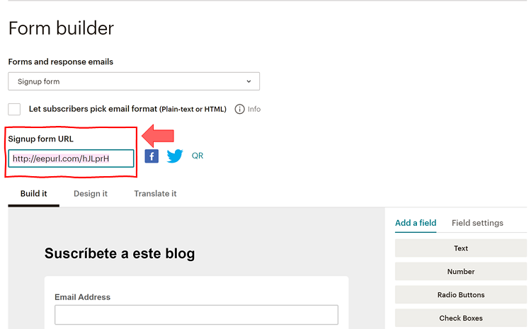
Incrustar el formulario en nuestro blog mediante código HTML. Esto es más complejo, pero evita que lectores tengan que ir a una URL externa para suscribirse, y además da al formulario una apariencia más consistente con el resto de nuestro blog.
Para implementar el formulario HTML incrustado hay que volver a Audience > Signup forms, pero ahora entrando en la sección “Embedded forms”.
En esta sección hay varias opciones de formularios incrustados, algunas con CSS y JavaScript, pero recomendaría usar la opción Unstyled: un formulario HTML básico que reduce la posibilidad de conflicto con el tema del blog.
Luego de seleccionar el formulario Unstyled recomiendo además desactivar la opción Include form title, porque el formulario se incrustará en una página Markdown que ya tiene su propio título.
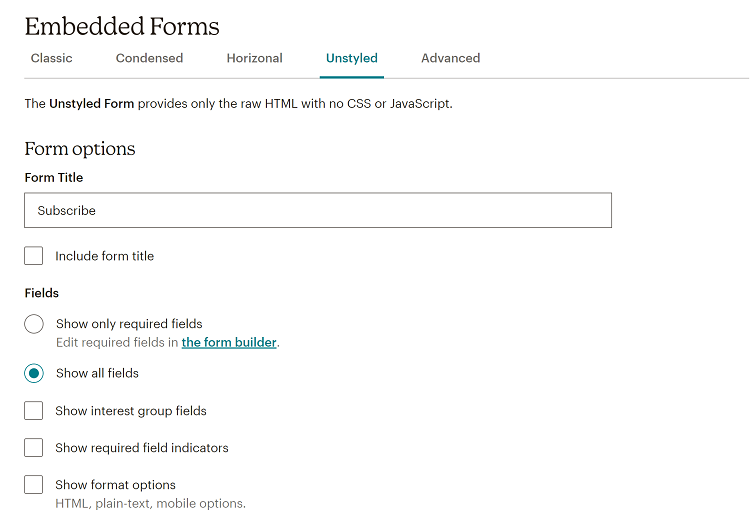
Es importante mencionar que los campos de este formulario y los del formulario que diseñamos en el editor visual son los mismos. No estamos creando un formulario distinto, sino que usando otra forma de acceder a él.
Luego de configurar las opciones, hay que ir al final de la página y presionar el botón “Generate Embed Code”.

Se debe copiar el código que aparecerá ahí, y pegarlo en el archivo .md correspondiente (aquel donde queremos que se muestre el formulario de suscripción). El código debe ir debajo de la cabecera YAML (en mi caso agregué también un pequeño texto explicativo entre la cabecera y el formulario).
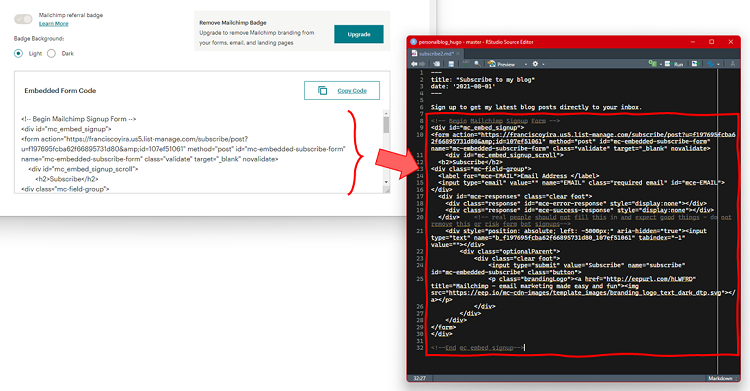
Al hacer knit del blog, la página con el formulario de suscripción debería lucir así:
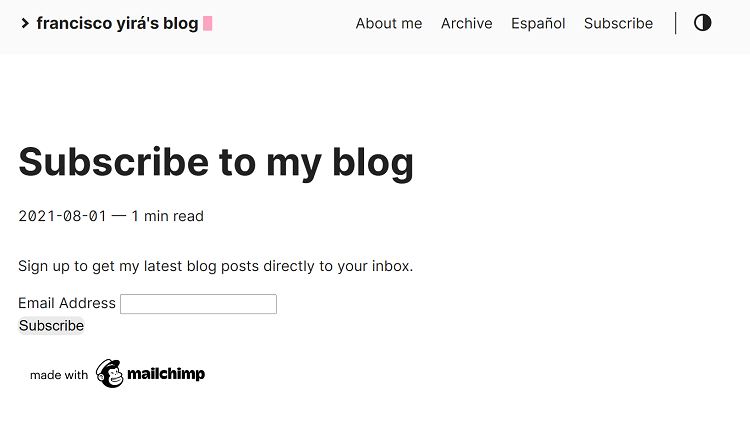
¡Y listo! Aquí ya tenemos un formulario de suscripción totalmente funcional, conectado al newsletter automatizado que creamos en la sección anterior.
Sin embargo, yo hice 2 ajustes adicionales, totalmente opcionales, que creo que mejoran la apariencia y funcionalidad del formulario.
Primero, cambiar el estilo del botón “Subscribe”. El por defecto no tiene mucha apariencia de botón, y además le falta un salto de línea que lo separe del campo Email Address. Para esto hay que buscar este código:
<input type="submit" value="Subscribe" name="subscribe" id="mc-embedded-subscribe" class="button">Y reemplazarlo por este código:
</br> <div class="clear"><input type="submit" value="Subscribe" name="subscribe" id="mc-embedded-subscribe" style="height:27px; width:100px; font-size:16px"></div>Segundo, agregar al final de la página un link al formulario alojado en MailChimp (el enlace directo que vimos en la sección anterior). ¿Por qué? Por la eventualidad de alguien que desee suscribirse pero use algún bloqueador de contenido (por ej., uBlock Origin) que le impida visualizar el formulario incrustado. Con este link esas personas tendrán una forma alternativa de darse de alta en el newsletter.
Para hacer este cambio basta con agregar un texto con el link correspondiente después de que termine el código del formulario incrustado (es decir, después de esta línea: <!--End mc_embed_signup-->).
Al hacer estos cambios la apariencia del formulario quedará así:

Estamos llegando a la parte final de este tutorial. Si sigues leyendo hasta aquí es porque no te basta con tener un único newsletter con todo el contenido de tu blog, sino que deseas tener varias listas de distribución, segmentadas por idioma, por tema, o ambas.
Para no extender tanto este art√≠culo (que ya esta siendo bastante largo), aqu√≠ no har√© una explicaci√≥n ‚Äúpaso por paso‚Äù como en secciones anteriores, sino que será una especie de anexo de la secci√≥n anterior (m√©todo 2), mostrando qu√© cosas hay que hacer distinto para obtener un newsletter segmentado (eso implica que si saltaste directo desde la introducci√≥n hasta acá, tendrás que subir y leer primero la parte del m√©todo 2, lo siento üòÖ).
El primer cambio necesario para tener listas de distribución segmentadas es usar feeds RSS específicos con el contenido que recibirá cada segmento.
Ilustraré esto con un ejemplo de este mismo blog: aquí implementé listas de distribución exclusivas para el contenido de Data Science, una en inglés y otra en español. Para esto fue necesario obtener 2 feeds RSS:
Feed con el contenido de Data Science en inglés
Feed con el contenido de Data Science en español
Al tener un sitio multilingüe con blogdown es muy sencillo obtener feeds RSS específicos para cada idioma: basta con agregar el código del idioma (por ej., es, fr, en) justo después de la baseURL. En el caso de este blog los feeds con contenido en español e inglés son los siguientes:
Español: franciscoyira.com/es/post/index.xml
Inglés: franciscoyira.com/post/index.xml
Donde franciscoyira.com corresponde a la baseURL. Notar el sufijo es/ en el feed en español (en el feed en inglés no hay sufijo porque está configurado como el idioma “base” del blog).
OK, ahí ya tenemos una regla para obtener los feeds correspondientes a cada idioma, pero ¿cómo obtener un feed que tenga sólo los posts sobre Data Science (o cualquier otro tema)?
Para esto debemos usar la estructura de tags y categorías de nuestro blog. En mi caso simplemente creé una categoría denominada data-science y empecé a marcar todos los posts de Data Science con esta categoría.
Aquí entra la magia de hugo, que automáticamente genera páginas para cada tag y categoría. En el caso de este ejemplo, se generaron las siguientes páginas con los posts de la categoría data-science:
franciscoyira.com/es/categories/data-science/ para los posts en español, y…
franciscoyira.com/categories/data-science/ para los posts en inglés.
Y como vimos en la sección anterior, hugo también crea automáticamente feeds RSS para las páginas de este tipo. Para acceder a estos feeds simplemente hay agregar el sufijo index.xml al final, por lo que los feeds de la categoría data-science serán estos:
franciscoyira.com/es/categories/data-science/index.xml para los posts en español, y…
franciscoyira.com/categories/data-science/index.xml para los posts en inglés.
Las instrucciones son muy similares si queremos usar tags en vez de categorías: por lo general bastará con reemplazar categories por tags en las URLs.
Como consideración, mencionar que los tags/categorías en distintos idiomas no tienen por qué llamarse igual, de hecho se configuran por separado y el que aquí tengan el mismo nombre es solo coincidencia. En mi blog quise que la categoría de Data Science tuviera el mismo nombre en español e inglés, pero perfectamente los posts en español podrían estar categorizados como ciencia-de-datos en cuyo caso la URL del feed sería así:
franciscoyira.com/es/categories/ciencia-de-datos/index.xml
Y esto no afectaría en nada la URL del feed de Data Science en inglés.
En resumen, depende de nosotros mismos crear una estructura de tags o categorías acorde a las listas de distribución que queramos tener. Una vez definida esta estructura, es sencillo obtener las URLs de los feeds RSS correspondientes: basta con encontrar la pagina del tag o categoría respectiva (para lo cual incluso se puede usar la navegación del blog) y agregar index.xml al final.
Y para especificar un idioma particular (en el caso de blogs multilingües) solo hace falta agregar el código de idioma después de la baseURL, siempre que se trate de un idioma distinto del “idioma base”.
Otro ingrediente necesario para segmentar un newsletter es contar con las respectivos campos de datos o columnas en el gestor de audiencias de MailChimp, indicando a qué segmento pertenece cada suscriptor.
MailChimp ofrece varias formas de crear categorías de suscriptores, y una de ellas literalmente se llama Segmentos, pero la que en realidad nos conviene usar se llama Grupos (es confuso, lo sé), ya que está directamente vinculada con los formularios de suscripción.
Para crear grupos hay que ir a Audience > All Contacts, ahí seleccionar el menú drop-down “Manage contacts” y hacer clic en “Groups”.

Dentro de la sección “Groups” hay que presionar el botón “Create Groups”, a la derecha de la pantalla.
Ahí aparecerá la siguiente página de configuración, donde se debe ingresar el nombre (Group category) y posibles valores (Group names) del grupo a crear. También se debe elegir cómo aparecerán estas opciones dentro del formulario de suscripción (radio buttons, dropdown, checkboxes, etc).
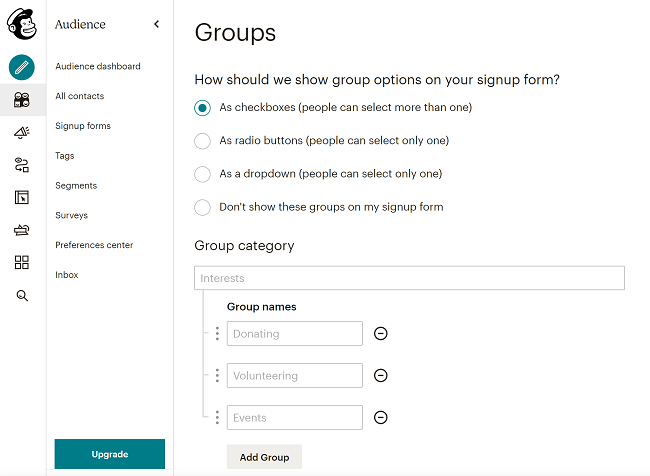
Aquí existe mucha libertad para crear distintos arreglos, dependiendo de cómo queremos que sea el flujo para enrolarse en cada lista de distribución7.
Para ejemplificar los pasos que vienen después, replicaré los mismos grupos que implementé en mi propio blog, pero ahora usando radio buttons para todos ellos:
Grupos según temas/contenido:
Todo el contenido: para quienes deseen recibir todos los posts que publique
Sólo Data Science: para quienes deseen recibir exclusivamente los posts con la categoría data-science.
Grupos según idioma:
Español
Inglés
Para implementar esta segmentación hay que dirigirse a la sección “Create groups” ya mencionada y crear los 2 tipos de grupos, escogiendo As radio buttons… para ambos.
Hecho esto, la sección de grupos debería verse así:

Ahora hay que disponibilizar un formulario que permita elegir entre estos grupos. Para esto, igual que antes, tenemos 2 opciones:
Usar un link directo a un formulario alojado en MailChimp. Los pasos para hacer esto son idénticos que los para el newsletter no segmentado.
Incrustar un formulario en nuestro blog. Aquí los pasos son muy similares a los del newsletter no segmentado, con una sola diferencia: dentro de Audience > Signup forms > Embedded Forms > Unstyled hay que asegurarse de activar la casilla “Show interest group fields”. Lo demás es todo igual: obtener el código HTML y pegarlo en un archivo .md de nuestra preferencia, dentro del repositorio del blog.
En ambos casos los grupos creados en el paso anterior se agregarán automáticamente al formulario.
Si seguimos la opción del formulario incrustado, el resultado debería lucir así:

Aquí ya contamos con un formulario funcional que permitirá a los lectores escoger su propia lista de suscripción en base a idioma e intereses/contenido. Técnicamente no es necesario hacer nada más y podrían saltar de aquí a la sección final del tutorial pero si les gusta rizar el rizo como a mi pueden leer a continuación cómo hacer algunas mejoras al formulario incrustado.
Si hemos optado por el formulario incrustado tenemos la opción de hacer algunos ajustes estéticos adicionales.
Para empezar, se pueden aplicar los mismos ajustes mostrados en la sección de newsletter no segmentado: mejorar el botón de suscripción, añadir un salto de línea después del campo de correo electrónico, y poner un link al formulario en MailChimp al final de la página (ante la eventualidad de que un bloqueador de contenido no permita visualizar el formulario incrustado).
Adicional a ello, creo que acá es buena idea cambiar los textos descriptivos de los grupos. Por ejemplo, dado que el formulario de este ejemplo sería bilingüe, aumentaría su usabilidad el describir las opciones tanto en inglés como en español.
Para lograr esto basta con ir al archivo .md donde está el formulario, invocar CTRL+F (o ⌘+F en Mac), buscar el texto que se muestra actualmente en el formulario y cambiarlo por otro nuevo que nos parezca más apropiado. En este caso, aplicaré los siguientes cambios:


Notar que esto no cambia el nombre interno de los campos de datos en el gestor de audiencias de MailChimp. Allí los campos siguen llamándose “Intereses/contenido" e”Idioma", y los valores asociados a cada alternativa son las opciones originales que configuramos en MailChimp.
Dicho de otra forma, existe simultáneamente un “valor interno” y un “valor para mostrar” para cada grupo y opción. Esto es útil ya que permite usar nombres cortos en los valores internos y nombres más largos y explicativos en los “valores para mostrar”.
Una vez conformes con la apariencia del formulario, hemos completado el segundo de los requisitos para tener un newsletter segmentado. Ahora vamos a usar estos ingredientes para el paso final: configurar el newsletter segmentado.
Una vez que tenemos las URLs de los feeds RSS, los segmentos de audiencia, y el formulario que permite a los suscriptores escoger su segmento, es hora de combinar todo esto para echar a andar nuestro newsletter segmentado ✨.
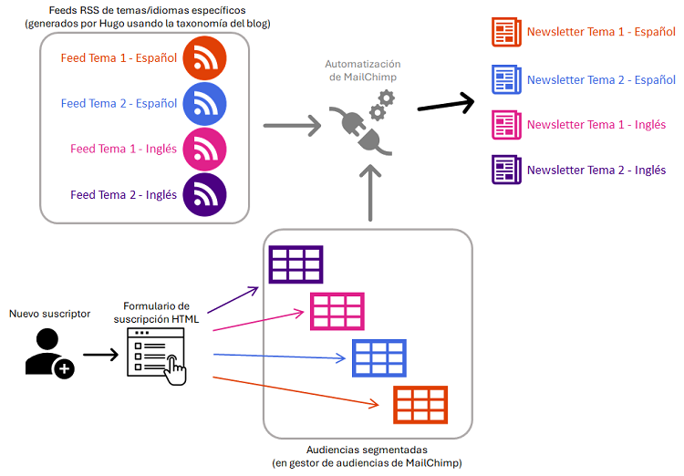
Lo que hay que hacer aquí es simplemente repetir el proceso de crear un newsletter automatizado (explicado ya en la sección anterior) para cada uno de los segmentos, pero haciendo 2 cambios:

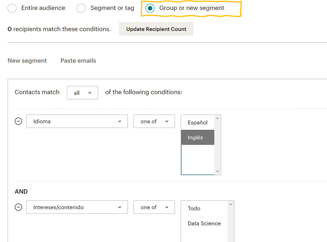
¡Y listo! El resto de los pasos son idénticos a los del newsletter sin segmentación. Solo recalcaría la necesidad de repetir el proceso con cada uno de los segmentos8, configurando una automatización distinta para todos ellos.
Tu feedback es bienvenido. Si tienes comentarios sobre este artículo puedes enviármelos por correo.
Por cierto, luego de este artículo retomo la serie sobre el libro Causal Inference: The Mixtape. El próximo post estará dedicado al capítulo 4, acerca el modelo causal de Potential Outcomes.
Algunas pocas opciones son de pago, como la posibilidad de eliminar el logo de Buttondown de los correos, pero casi todas las opciones que alguien podría querer usar en un newsletter básico son gratuitas.↩︎
Las instrucciones para activar los feeds RSS con contenido completo no las cubriré en este post, ya que dependen de la versión de hugo y del template que estemos usando, y corro el riesgo de escribir algo que no sea aplicable a casos distintos al mío. Si quieres activar esta opción en tu blog recomendaría estos enlaces como punto de partida: (1) , (2), (3) y (4).↩︎
Alternativamente también se puede usar este feed: baseURL/index.xml. Pero este incluirá también las páginas de primer nivel, tales como “Acerca de”, “Contáctame”, etc. , y también las páginas de otras secciones, si es que las hay (por ejemplo, si hay una sección “Portafolio”, este feed incluirá también las páginas dentro de ella). Lo más probable que NO queramos que estas páginas se envíen como newsletter. Por eso mi sugerencia es buscar un feed que contenga únicamente los posts o artículos.↩︎
Notar que se enviarán correos nuevos en esos días/horas sólo si existe contenido nuevo desde el envío anterior, en caso contrario no se enviará nada. Por otro lado, si se desactivan algunos días y se publica un artículo ahí, Mailchimp tendrá que esperar hasta el siguiente día con envíos habilitados para poder enviar el newsletter. Por ello, mi recomendación aquí sería dejar intacta la opción por defecto, que es intentar enviar correos todos los días.↩︎
Ya en la siguiente sección explicaré los cambios necesarios para introducir segmentación en el newsletter, pero por ahora estoy intentando explicar el proceso de la forma más simple posible.↩︎
Por ejemplo, Microsoft Outlook Desktop utiliza ¡Word! como visor de HTML, y a la vez es una aplicación muy utilizada en empresas, por lo que es casi seguro que alguno de nuestros suscriptores recibirá el newsletter ahí y tendrá una mala experiencia si no lo redirigimos a un navegador web a leer el artículo.↩︎
Por ejemplo, yo definí el Idioma como una Group category que está oculta en los formularios: si te suscribes en el formulario en español recibirás contenido en español, y si usas el formulario en inglés recibirás contenido en inglés. Pero también podría haber configurado un formulario único, bilingüe, donde la opción de idioma se pudiera escoger desde un dropdown o con radio buttons.↩︎
En este ejemplo serían 4 segmentos, correspondientes a la combinatoria de los grupos de Idioma y de Intereses/contenido: Todo-Inglés, Todo-Español, Data Science-Inglés y Data Science-Español.↩︎